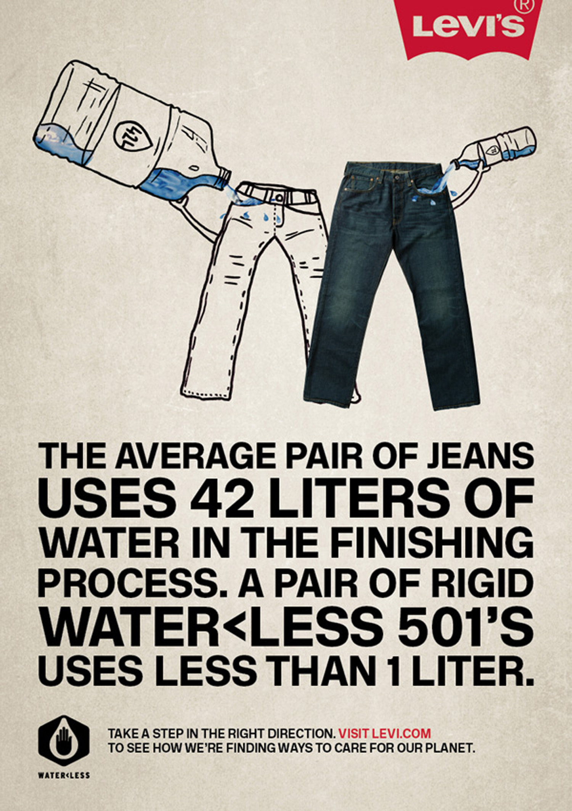
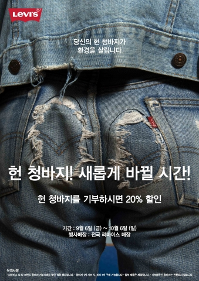

Water Less™ 공법

리바이스(Levi’s)는 데님 생산 과정에서 발생하는 과도한 수자원 사용 문제를 해결하기 위해 2011년 Water Less™ 공법을 개발하였다. 이 기술은 데님 워싱(세탁 및 마감) 과정에서의 물 사용량을 최소화하기 위한 절수형 생산 방식으로, 기존 공정 대비 최대 96%의 물 절감 효과를 가져왔다.
일반적으로 한 벌의 청바지를 제작하는 데 약 3,000~10,000리터의 물이 사용되지만, Water Less™ 공법을 적용한 제품은 자갈, 오존, 공기(Air Wash) 등의 대체 마감 기술을 활용하여 반복적인 세탁 단계를 줄이고, 염색 공정의 잔류수를 재활용함으로써 물 낭비를 대폭 감소시킨다.
그 결과 리바이스는 누적 약 30억 리터 이상의 물 절감을 달성하였으며, 현재 전체 데님 제품 중 약 70% 이상이 이 공법을 통해 생산되고 있다. 또한 리바이스는 Water Less™ 기술을 오픈소스로 공개하여 다른 패션 브랜드들도 해당 절수 기술을 활용할 수 있도록 지원함으로써, 패션 산업 전반의 지속가능한 생산체계 확산에 기여하고 있다.
Recycle & Reuse 프로그램

리바이스(Levi’s)는 의류의 수명을 연장하고 폐기물을 최소화하기 위해 리사이클(Recycle)과 리유즈(Reuse) 중심의 순환형 프로그램을 운영하고 있다.
- Levi’s® SecondHand — 소비자로부터 중고 리바이스 제품을 매입하여 세척·보수 후 다시 판매하는 공식 리세일 플랫폼. 이를 통해 제품의 생애주기를 연장함으로써 신규 생산으로 인한 자원 소모와 탄소 배출을 줄이는 효과를 거두었다.
- Trade-In — 고객이 사용하지 않는 청바지를 반납하면 일정 금액의 기프트 카드를 지급하여, 재사용과 재순환에 대한 참여를 유도한다.
- Levi’s® Tailor Shop — 청바지의 수선, 자수, 패치워크, 커스터마이징 등의 서비스를 제공하며 ‘Repair, Reimagine, Recycle’이라는 슬로건 아래 의류를 버리지 않고 새로운 형태로 되살리는 문화를 확산하고 있다. 내부 연구에 따르면, 청바지를 9개월 더 착용할 경우 탄소 배출과 물 소비량이 약 20–30% 감소한다.
이처럼 리바이스의 리사이클 & 리유즈 프로그램은 단순한 중고 판매를 넘어, 소비자 참여를 기반으로 한 지속가능한 패션 생태계 구축의 모델로 평가된다.